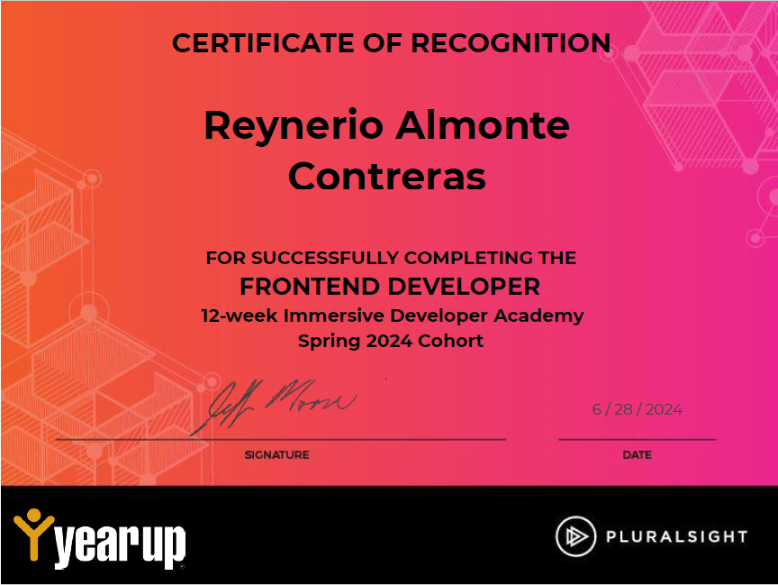

×


×

Welcome to my Digital Portfolio
I am a dedicated and detail-oriented DevOps engineer with an Associate's
degree, a certification from
a comprehensive 6 month bootcamp, and hands-on experience gained through an internship at a Fortune 500
Company
for 6 months. During my internship, I collaborated with cross-functional teams to automate
infrastructure,
optimize deployment pipelines, and improve system scalability.
My technical expertise includes cloud platforms, containerization (Docker, Kubernetes), CI/CD pipelines,
and infrastructure-as-code (Terraform). I am passionate about bridging the gap between
development and operations, and I bring a practical approach to building and maintaining scalable,
high-performance systems.
I thrive in environments where innovation and efficiency are key, and I am eager to contribute to teams
that prioritize agile methodologies, continuous improvement, and collaboration.
Biography
Hello my name is Reynerio, but you can call me Rey! The first 10 years I struggle to
decide
what field I wanted to work at. I have an Associate degree as basic x-ray technician and I worked at the
doctors office
for a year. I really enjoyed the work I was doing and I thought helping people was something I wanted to do.
There were
several moments that were hard to handle. Seeing patients that have broken bones or a dislocation, it
weighed heavy on me.
After a year I decided to leave the doctors office due to the mental strain.
While I decided on what was my next career path, I worked in the hospitality field as a valet driver. I
really enjoyed
being a valet driver, it was my form of exercise for the week, I really enjoyed driving nice and expensive
cars, and I
was helping people in a different way. This is where I stayed for nearly 7 years. After the pandemic things
were hard,
things got more expensive and less people were going on vacation. I was losing income to take care of
myself. I needed a
new career.
This is when I came across YearUp United. I applied knowing I was nearly at their age limit, but I was
hoping for a
positive outcome. When they called me to inform me that I got accepted into their Application Development
course I
nearly cried. This was my new opportunity for a new life. During the YearUp Bootcamp I learned some of the
basics of
Frontend Development (HTML, CSS, JavaScript, ect.) for 6 months. After six months, those who did well in the
program
were accepted into a internship through the corporate partners of YearUp. This is where we will spend 6 more
months to
hone our skills and become Application Development Professionals. I am hopeful for the results of this
program and I
intend to do my best at this internship.